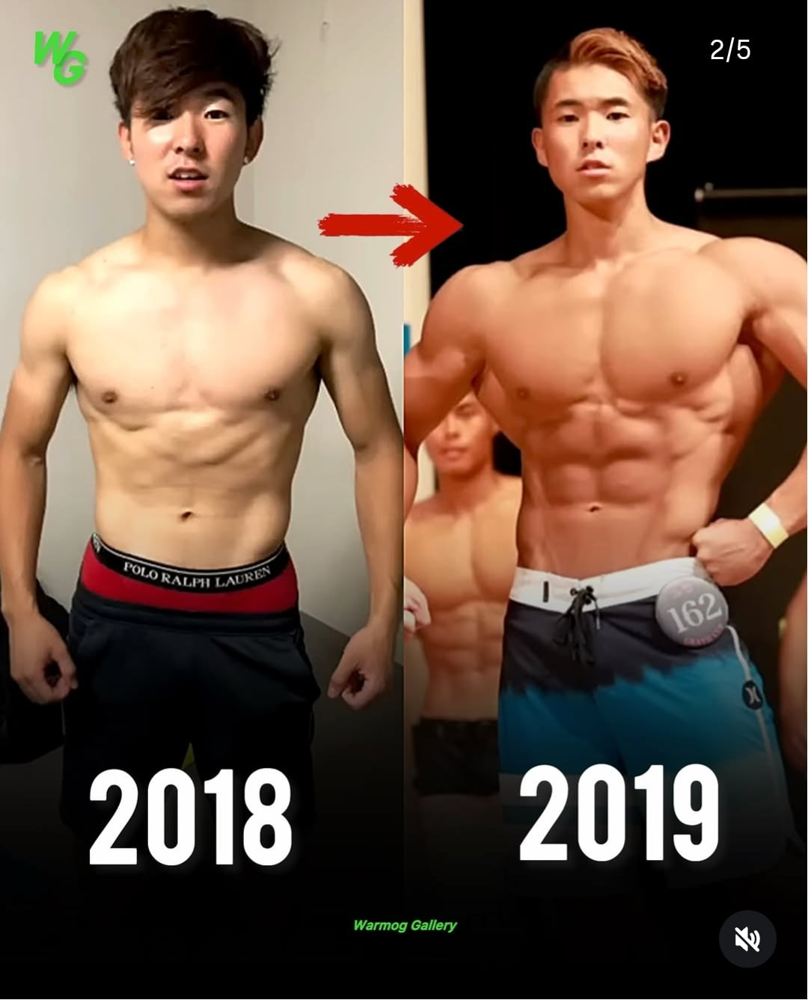
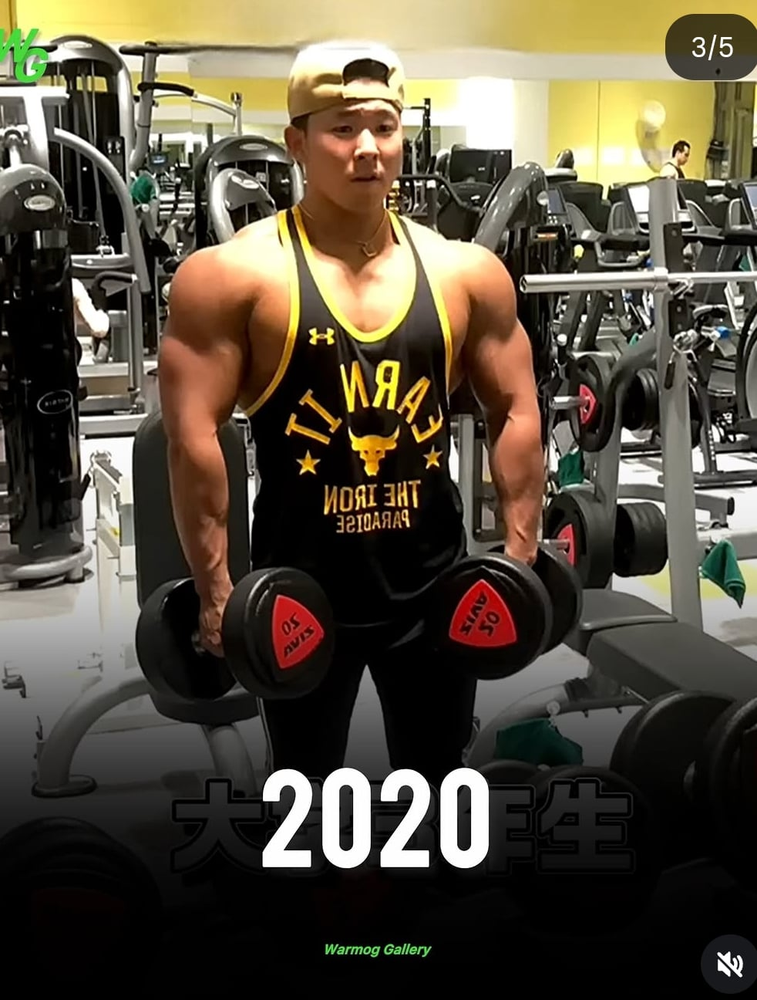
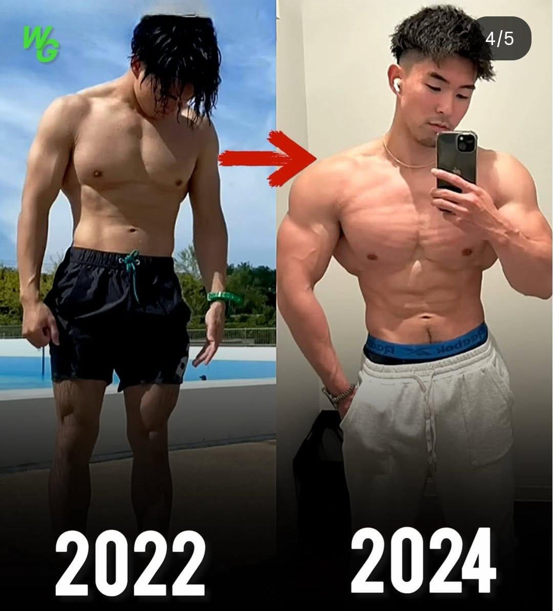
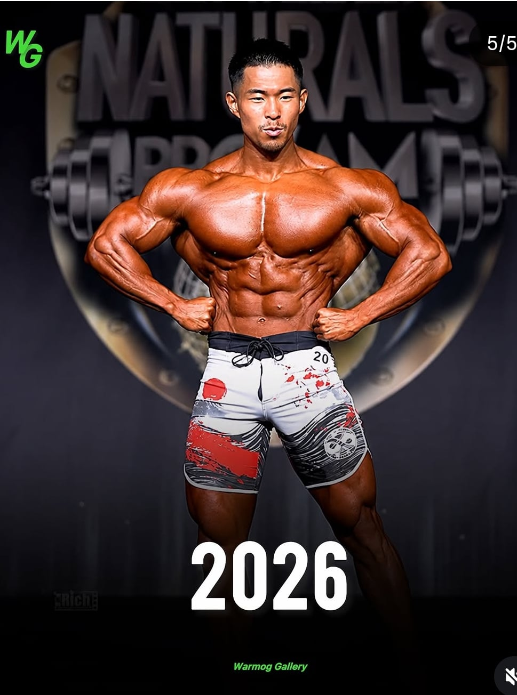

벤웨이더 우승자 아마노 나오야
구력이랑 변천사가 비상식적임




벤웨이더 우승자 아마노 나오야
구력이랑 변천사가 비상식적임




참고로 약쟁이들은 운동하려는 의지마저 약으로 보충하는거임, 쟤네가 그나마 자위하는 정신력도 약빠지면 끝남
벤 웨이더 내추럴 대회긴 한데 우리가 생각하는 쌩 내추럴 대회는 아님
약물에 따라 다르긴 한데 최소 6개월에서 3년 정도 약물 이력 없으면 참가 가능함
대회 상위 2명인가는 소변 검사하고 거짓말 탐지기로 약물 잡아낸다고도 하고
몇만년 진화압으로 일정이상 근육은 기를 쓰고 분해시키려는 유전자와의 싸움임 ㅋㅋㅋ 댓에서 말하는 재능이라는건 이 유전자압이 태생적으로 일반인들에 비해 아주 약간 적은 사람들.
뼈도 커짐?? 아니면 걍 기존 뼈에 근육만 붙는건가??
뼈 자체의 굵기변화는 거의없는데 인대,근육힘줄이 커지면 밀리고 자세가 달라지고해서 골격이 커보일수는있음
저바닥은 냥코대전쟁임..
근데 ㄹㅇ일수도 있지 않나 싶기도..
군대 선임이 딱 저렇게 생겼었는데
자기는 무거운 것 드는 상상 운동을 한다고 하면서
무거운거 드는척 마임같은 운동을 하더라고..
웃긴게 1년동안 군대에서 그렇게
상상운동으로 벌크업 상당하게 하더라..
진짜 뭐지??? 싶을정도로
공룡유전자가 그런말이야. 속근 비율이 높고 위성세포가 활성화가 되어있다는말인데 일반인 기준에서 그게 가능한 사람이 별로없음. 그게 가능하려면 기본적인 운동을 어느정도 하던사람이어야하는데 저 사람 1년전 몸 보면 그닥 운동하는 사람 몸은 아니자나 ㅋㅋ 아마 니 후임도 어느정도 수준은 되었을거야. 근력이 필요한 작업 한다치면 에이스 수준이거나 그에 근접하거나 그랬을거야. 아니면 회복력이 넘사라던가 ㅋㅋ
나 군생활할때도 바키식 수련법이 유행하긴 했어.....
저렇게 20대 꺼드럭대다가 30넘어가면 하나 둘 죽어나가는게 저 업계임. 저 친구도 살날이 얼마 안남았어. 이제 겨우 31인 씨범도 신장망가져서 죽을뻔 한 거 암? 이분야 고트인 아놀드 형님도 심장수술 몇번 하셨지. 이 형님은 영화로 벌어놓은 돈 아니었음 진작 죽었어. 박승현씨도 젊은나이에 그렇게 갑자기 간게 왜 그렇겠음. 애초에 자연적으로 만들어지는 호르몬의 수천배가 넘는 고용량을 단일이 아닌 칵테일로, 순도도 보장되지 않는 제품을, 거기에 커팅제같은 불법약물까지 사용하면서 살아남을 수 있다고 생각하는게 오만이지
문제는 저 녀석은 내추럴 행세를 하고있다는 거임
씨범 박승연이야 공공연하게 케미컬 유저인걸 드러냈지만 쟤는 아님..
뭐 짧고 굵게 가고 싶다는데 ㅋㅋㅋㅋ
'나오야' ???
승모 저렇게올라오면 네츄럴아님
내친구도 이번에 세계대회나가서 상받던데 ifbb인가
내츄럴맞겠지? 체대나오고 보디빌더한지 10년넘음
이미 근육을 키워 놓은 상태라
도핑검사 의미가 없는건가?
내가 10년 넘게 한게 2년만에 하는걸 보고 욕심을 내려두고 취미로만 하고 있슴다 ㅋ
약한거는 별개로 몸이쁘게 잘깍았네
얼굴 이목구비부터가 선천적으로 몸 좋을수가 없는 관상
맨첨사진이 광배를 안빼서 그렇게 안보이는거 아닌가,,?
저 관상은 백퍼임